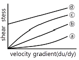
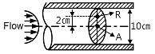
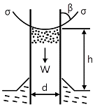
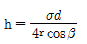
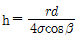
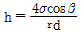
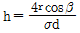
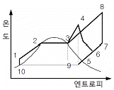
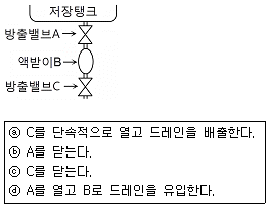
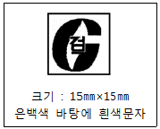

가스기사 (2007-05-13 기출문제)
1과목: 가스유체역학
1. 물의 점성계수(μ)0.01poise를 SI 단위로 표시하면 약 몇 ㎏/m·s가 되는가?
- 0.1
- 0.01
- 0.001
- 0.0001
(정답률: 65%)

2. 전단응력(shear stress)과 속도구배와의 관계를 나타낸 그림에서 빙햄 플라스틱 유체(Bingham plastic fluid)에 관한 것은?

- ⓐ
- ⓑ
- ⓒ
- ⓓ
(정답률: 60%)
3. 다음 중 실제유체와 이상유체에 항상 적용되는 것은?
- 뉴턴의 점성법칙
- 압축성
- 비활조건(no slop condition)
- 에너지 보존의 법칙
(정답률: 70%)
4. 그림에서와 같이 파이프내로 비압축성 유체가 층류로 흐르고 있다. A점에서 최대유속 1m/s을 갖는다면 R점에서의 유속은 몇 m/s인가? (단, 관의 직경은 10㎝이다.)

- 0.36
- 0.60
- 0.84
- 1.00
(정답률: 24%)
5. 다음 중 Mach 수를 의미하는 것은 무엇인가?
- 실제유동속도/음속
- 초음속/아음속
- 음속/실제유동속도
- 아음속/초음속
(정답률: 67%)
6. 배관에 기체가 흐를 때 일어날 수 있는 과정이 아닌 것은?
- 등엔트로피 팽창
- 단열마찰 흐름
- 등압마찰 흐름
- 등온마찰 흐름
(정답률: 알수없음)
7. 내경 5㎝의 관속을 점도 1cp인 물이 4㎝/s의 속도로 흐르고 있을 때 Fanning의 마찰계수의 값은?
- 0.008
- 0.032
- 0.087
- 0.320
(정답률: 30%)
8. 지름이 8㎝인 파이프 안으로 비중이 0.8인 기름을 30㎏/min의 질량유속으로 수송하면 파이프 안에서 기름이 흐르는 평균속도는 약 몇 m/min인가?
- 7.46
- 17.46
- 20.46
- 27.46
(정답률: 알수없음)
9. 다음 그림에서 모세관 현상으로 올라가는 액주의 높이 h를 계산하는 공식은 어느 것인 가? (단, σ는 표면장력계수이고 비중량 r는 ρ·g이다.)





(정답률: 알수없음)
10. 절대압이 2㎏f/㎝2이고, 27℃인 이상 기체 2㎏이 단열압축되어 절대압 3㎏f/cm2이 되었다. 최종온도는 약 몇 ℃인가? (단, 비열비 K는 1.4이다.)
- 43
- 64
- 85
- 102
(정답률: 43%)
11. 정지 공기 속을 비행기가 360km/h의 속도로 날아간다. 이 비행기에 있는 직경 2m인 프로펠러를 통해 공기 400m3/s가 배출된다고 할 때 이론 효율은 약 몇 %인가?
- 39
- 44
- 79
- 88
(정답률: 25%)
12. 베르누이 방정식에 관한 일반적인 설명으로 옳은 것은?
- 같은 유선상이 아니더라도 언제나 임의의 점에 대하여 적용된다.
- 주로 비정상류 상태의 흐름에 대하여 적용된다.
- 유체의 마찰 효과를 고려한 식이다.
- 압력항, 속도항, 위치수두항의 합은 일정하다.
(정답률: 65%)
13. 대기압이 750㎜Hg일 때 수두 ㎜H2O는 약 얼마인가?
- 1.033
- 102
- 1033
- 10200
(정답률: 59%)
14. 비압축성 이상유체에 작용하지 않는 항은?
- 마찰력 또는 전단응력
- 중력에 의한 힘
- 압력차에 의한 힘
- 관성력
(정답률: 알수없음)
15. 비중 0.8, 점도 5체의 유체를 1m/s의 속도로 안지름 10㎝인 관을 사용하여 2km 까지 수송한다. 이때의 두 손실은 약 몇 ㎏f·m/㎏인가?
- 2.25
- 4.08
- 22.5
- 40.8
(정답률: 알수없음)
16. 압축성 유체의 기계적 에너지수지식에서 고려하지 않는 것은?
- 내부에너지
- 위치에너지
- 엔트로피
- 엔탈피
(정답률: 50%)
17. 산소 100ℓ가 용기의 구멍을 통해 빠져 나오는데 20분 걸렸다면 같은 조건에서 이산화탄소 100ℓ가 빠져 나오는 데 걸리는 시간은 약 얼마인가?
- 23.5분
- 33.5분
- 43.5분
- 55.5분
(정답률: 알수없음)
18. 수직충격파는 어떤 과정에 가장 가까운가?
- 비가역 과정
- 등엔트로피 과정
- 가역과정
- 등압 및 등엔탈피 과정
(정답률: 37%)
19. 다음 무차원의 정의 중 옳은 것은?
- Froude No.＝관성력/중력
- Euler No.＝점성력/압력2
- Reynolds No.＝점성력/관성력
- Mach No.＝점성력/관성력
(정답률: 46%)
20. 다음 중 가정에서 사용하는 수도꼭지와 같은 것으로 다소 섬세한 유량이 필요할 때 가장 많이 사용되는 밸브는 어느 것인가?
- 게이트 밸브
- 글로브 밸브
- 체크 밸브
- 나비 밸브
(정답률: 60%)
2과목: 연소공학
21. 브레이톤사이클에서 열은 어느 과정을 통해 흡수되는가?
- 정용과정
- 등온과정
- 정압과정
- 단열과정
(정답률: 알수없음)
22. 엔탈피에 대한 설명 중 옳지 않은 것은?
- 열량을 일정한 온도로 나눈 값이다.
- 경로에 따라 변화하지 않는 상태함수이다.
- 엔탈피의 측정에는 흐름열량계를 사용한다.
- 내부에너지와 유동일(흐름일)의 합으로 나타낸다.
(정답률: 50%)
23. 오토 사이클에서 압축비(ε)가 10일 때 열효율은 몇 %인가? (단, 비열비 K는 1.4이다.)
- 60.2
- 62.5
- 64.2
- 66.5
(정답률: 59%)
24. 다음 중 열역학 제1법칙에 대하여 옳게 설명한 것은?
- 열평형에 관한 법칙이다.
- 이상기체에만 적용되는 법칙이다.
- 클라시우스의 표현으로 정의되는 법칙이다.
- 에너지 보존법칙 중 열과 일의 관계를 설명한 것이다.
(정답률: 54%)
25. 카르노사이클(Carnot Cycle)이 ⓐ100℃와 200℃ 사이에서 작동하는 것과 ⓑ300℃와 400℃ 사이에서 작동하는 것이 있을 때, 이 경우 열효율은 다음 중 어떤 관계에 있는가?
- ⓐ 은 ⓑ보다 열효율이 크다.
- ⓐ 은 ⓑ보다 열효율이 작다.
- ⓐ 과 ⓑ의 열효율은 같다.
- ⓑ는 ⓐ의 열효율 제곱과 같다.
(정답률: 42%)
26. 다음은 간단한 수증기 싸이클을 나타낸 그림이다. 이 그림의 경로에서 Rankine 사이클을 의미하는 것은?

- 1-2-3-4-5-9-10-1
- 1-2-3-9-10-1
- 1-2-3-4-6-5-9-10-1
- 1-2-3-8-7-5-6-9-10-1
(정답률: 54%)
27. (CO2)max 18.0%, CO2 14.2%, CO 3.0%일 때 연도가스 중의 O2는 약 몇 %인가?
- 2.12
- 3.12
- 4.12
- 5.12
(정답률: 20%)
28. 연소과정에서 발생된 열량에서 연소에 의해 발생된 수증기의 잠열 차에 의한 열량이 6000kcal/m3, 연료의 진발열량이 7000kcal/m3일 때 연소효율은 약 몇 %인가?
- 46
- 54
- 86
- 117
(정답률: 60%)
29. 오토(otto)사이클의 효율을 η1, 디젤(disel)사이클의 효율을 η2, 사바테(sabater) 사이클의 효율을 η3이라 할 때 공급열량과 압축비가 같을 경우 효율의 크기는?
- η1＞η2＞η3
- η1＞η3＞η2
- η2＞η1＞η3
- η2＞η3＞η1
(정답률: 55%)
30. 내압방폭구조로 방폭전기기기를 설계할 때 가장 중요하게 고려해야 할 사항은?
- 가연성 가스의 최소 점화에너지
- 가연성 가스의 안전간극
- 가연성 가스의 연소열
- 가연성 가스의 발화점
(정답률: 알수없음)
31. 다음 중 발열량(kcal/m3)이 가장 낮은 기체 연료는?
- 석탄가스
- 수성가스
- 고로가스
- 발생로가스
(정답률: 46%)
32. 자연 상태의 물질을 어떤 과정(process)을 통해 화학적으로 변형시킨 상태의 연료를 2차 연료라고 한다. 다음 중 2차 연료에 해당하는 것은?
- 석탄
- 원유
- 천연가스
- LPG
(정답률: 알수없음)
33. 연료 반응이 완료되지 않아 연소가스 중에 반응의 중간 생성물이 들어 있는 현상을 무엇이라 하는가?
- 열해리
- 순반응
- 역화반응
- 연쇄분자반응
(정답률: 50%)
34. 다음 설명 중 옳지 않은 것은?
- 공기비란 실제로 공급한 공기량의 이론 공기량에 대한 비율이다.
- 과잉공기란 연소 시 단위 연료당의 공급 공기량을 말한다.
- 필요한 공기량의 최소량은 화학 반응식으로부터 이론적으로 구할 수 있다.
- 공연비는 공기와 연료의 공급 질량비를 말한다.
(정답률: 알수없음)
35. 액체 연료의 완전연소 시 배출가스 분석결과 CO2 20%, O2 5%, N2 75%이었다. 이 경우 공기비는 약 얼마인가?
- 1.3
- 1.5
- 1.7
- 1.9
(정답률: 알수없음)
36. 공기 중의 질소와 산소의 혼합비율(중량비)로 옳은 것은?(오류 신고가 접수된 문제입니다. 반드시 정답과 해설을 확인하시기 바랍니다.)
- 산소 21%, 질소 79%
- 산소 79%, 질소 21%
- 산소 23.2%, 질소 76.8%
- 산소 76.8%, 질소 23.2%
(정답률: 0%)
37. 프로판을 완전 연소시키는데 필요한 이 론 공기량은 메탄의 몇 배인가? (단, 공기 중 산소의 비율은 21v%이다.)
- 1.5
- 2.0
- 2.5
- 3.0
(정답률: 알수없음)
38. 건(조)도가 0이면 다음 중 어디에 해당 하는가?
- 포화수
- 과열증기
- 습증기
- 건포화증기
(정답률: 알수없음)
39. 분자량이 30인 어느 가스의 정압비열이 0.516kJ/㎏·°K이라고 가정할 때 이 가스의 비열비 K는 약 얼마인가?
- 1.0
- 1.4
- 1.8
- 2.2
(정답률: 42%)
40. 착화온도에 대한 설명 중 틀린 것은?
- 반응활성도가 클수록 높아진다.
- 발열량이 클수록 낮아진다.
- 산소량이 증가할수록 낮아진다.
- 압력이 높아질수록 낮아진다.
(정답률: 47%)
3과목: 가스설비
41. 다음 중 공기액화분리로 제조하지 않는 것은?
- O2
- N2
- Ar
- CO
(정답률: 알수없음)
42. 다음 그림에 표시한 LPG 가스 저장탱크의 드레인밸브(drain valve)조작 순서로서 가 장 옳은 것은? (단, A와 C 밸브는 조작 전에 닫혀 있다.)

- ⓐ → ⓓ → ⓒ → ⓑ
- ⓓ → ⓐ → ⓒ → ⓑ
- ⓓ → ⓐ → ⓑ → ⓒ
- ⓓ → ⓑ → ⓐ → ⓒ
(정답률: 47%)
43. 저온장치용 금속재료에 있어서 일반적으로 온도가 낮을수록 감소하는 기계적 성질은?
- 항복점
- 충격값
- 인장강도
- 경도
(정답률: 알수없음)
44. 도시가스 원료로 사용되는 LNG의 특징에 대한 설명으로 가장 거리가 먼 것은?
- 기화설비만으로 도시가스를 쉽게 만들 수 있다.
- 냉열 이용이 가능하다.
- 대기 및 수질오염 등 환경 문제가 없다.
- 상온에서 쉽게 저장할 수 있다.
(정답률: 40%)
45. 과류차단 안전기구가 부착된 것으로 배관과 호스 또는 배관과 카플러를 연결하는 구조의 콕은?
- 호스콕
- 퓨즈콕
- 상자콕
- 노즐콕
(정답률: 알수없음)
46. 터보압축기에서의 서징(Surging) 방지책에 해당되지 않는 것은?
- 회전수 가감에 의한 방법
- 가이드 베인 콘트롤에 의한 방법
- 방출밸브에 의한 방법
- 클리어런스 밸브에 의한 방법
(정답률: 28%)
47. 고압의 액체를 분출할 때 그 주변의 액 체가 분사류에 따라서 송출되는 구조로서 노즐, 슬로우트, 디퓨져 등으로 구성되어 있는 펌프는?
- 마찰펌프
- 와류펌프
- 기포펌프
- 제트펌프
(정답률: 알수없음)
48. 가스 연소 시 역화(Flash back)발생의 원인이 아닌 것은?
- 부식에 의하여 염공이 크게 된 경우
- 가스의 압력이 저하된 경우
- 콕크가 충분하게 열리지 않는 경우
- 노즐의 직경이 너무 작게 된 경우
(정답률: 알수없음)
49. 불꽃의 주위, 특히 불꽃의 기저부에 대 한 공기의 움직임이 세지면 불꽃이 노즐에 정착하지 않고 떨어지게 되어 꺼지는 현상은?
- 블로우 오프(blow-off)
- 백-파이어(back-fire)
- 리프트(lift)
- 불완전 연소
(정답률: 알수없음)
50. 초저온 저장탱크 내용적이 20000ℓ일 때 충전할 수 있는 액체 산소량은 약 몇 ㎏인가? (단, 액체 산소의 비중은 1.14이다.)
- 17540
- 19230
- 2⑤20
- 22800
(정답률: 55%)
51. 가스조정기 중 2단 감압식 조정기의 장점이 아닌 것은?
- 조정기의 개수가 적어도 된다.
- 연소기구에 적합한 압력으로 공급할 수 있다.
- 배관의 관경을 비교적 작게 할 수 있다.
- 입상배관에 의한 압력강하를 보정할 수 있다.
(정답률: 알수없음)
52. 도시가스의 부취제로 사용되지 않는 것은?
- TBM
- THT
- OCP
- DMS
(정답률: 40%)
53. LPG 공급방식 중 공기혼합 방식의 목적에 해당하지 않는 것은?
- 발열량 조절
- 누설시의 손실 감소
- 연소 효율의 증대
- 재액화 현상 촉진
(정답률: 80%)
54. 고압가스 저장탱크 및 설비에 설치하는 안전장치에 대한 설명으로 옳은 것은?
- 릴리이프는 압축기 및 배관에 있어서 기체 증기의 압력상승을 방지하기 위하여 설치한다.
- 고압가스 저장탱크 설비 내 안전밸브는 액체의 압력상승을 방지하기 위하여 설치한다.
- 고압가스 설비 내의 압력을 자동적으로 제어하는 자동압력제어장치는 다른 안전장치와 병행 설치한다.
- 파열판은 급격한 압력상승, 가연성 가스 및 독성가스의 누출의 우려가 있는 경우에 안전밸브와 겸용하여 설치한다.
(정답률: 29%)
55. 아세틸렌에 대한 설명 중 틀린 것은?
- 공기 중 폭발하한계가 2.5% 로서 아주 낮다.
- 충전 시에는 황산을 안정제로 첨가하여 2.5MPa 이하로 충전한다.
- 동, 수은, 은 등과 폭발성 화합물을 만들므로 이러한 물질과 접촉되지 않게 보관한다.
- 비점과 융점이 거의 비슷하다.
(정답률: 알수없음)
56. 10℃에서 절대압력이 0.9MPa인 질소가스(기체상태)가 있다. 이 가스가 법적으로 고압가스에 해당되는지의 여부를 판단한 것으로 옳은 것은?
- 0.88MPa·g로서 고압가스가 아니다.
- 0.88MPa·g로서 고압가스이다.
- 1.08MPa·g로서 고압가스가 아니다.
- 1.08MPa·g로서 고압가스이다.
(정답률: 알수없음)
57. 역카르노 사이클로서 작동되는 냉동기 가 30PS의 일을 받아서 저온체로 20kcal/s의 열을 흡수한다면 고온체로 방출하는 열량은 약 몇 kcal/s인가?
- 14.7
- 25.3
- 2230
- 2270
(정답률: 알수없음)
58. LNG 저장탱크에서 상이한 액체 밀도로 인하여 층상화된 액체의 불안정한 상태가 바로 잡힐 때 생기는 LNG의 급격한 물질 혼합 현상으로 상당한 양의 증발가스가 발생하는 현상은?
- 롤오버(Roll-over) 현상
- 증발(Boil-off) 현상
- BLEVE 현상
- Fire Ball 현상
(정답률: 50%)
59. 회전펌프의 특징에 대한 설명 중 틀린 것은?
- 액의 이송에 적합하다.
- 구조가 간단하다.
- 토출압력에 따라 토출량이 크게 변한다.
- 청소 및 분해가 용이하다.
(정답률: 알수없음)
60. 고압가스의 상태에 따른 분류 방법이 아닌 것은?
- 압축가스
- 용해가스
- 액화가스
- 혼합가스
(정답률: 알수없음)
4과목: 가스안전관리
61. 차량에 고정된 탱크 및 용기에는 안전밸브 등 필요한 부속품이 장치되어 있어야 하는 데 이 중 긴급차단장치는 그 성능이 원격조작에 의하여 작동되고 차량에 고정된 저장탱크 또는 이에 접속하는 배관 외면의 온도가 얼마일 때 자동적으로 작동하도록 되어 잇는가?
- 90℃
- 100℃
- 110℃
- 120℃
(정답률: 30%)
62. 시안화수소를 용기에 충전할 때 주로 사용되는 안정제는?
- 염산
- 아세트산
- 아황산가스
- 염소가스
(정답률: 39%)
63. 파일럿버너 또는 메인버너의 불꽃이 꺼지거나 연소기구 사용 중에 가스 공급이 중단 혹 은 불꽃 검지부에 고장이 생겼을 때 자동으로 가스밸브를 닫히게 하여 불이 꺼졌을 때 가스가 유출되는 것을 방지하는 안전장치는?
- 과열방지장치
- 산소결핍안전장치
- 헛불방지장치
- 소화안전장치
(정답률: 알수없음)
64. 발열량이 11400kcal/m3이고 가스비중이 0.7, 공급압력이 200㎜H2O인 나프타가스의 웨버지수는 약 얼마인가?
- 10700
- 11360
- 12950
- 13630
(정답률: 34%)
65. 다음 중 가스에 대한 설명으로 옳은 것은?
- 트리메틸아민은 가연성가스이지만 독성가스는 아니다.
- 허용농도가 백만분의 20 이하인 가스를 독성가스로 분류한다.
- 가압. 냉각 등의 방법에 의하여 액체상태로 되어 있는 것으로서 대기압에서의 비점이 섭씨 40도 이하 또는 상용의 온도 이하인 것을 가연성가스라 한다.
- 일정한 압력에 의하여 압축되어 있는 가스를 압축가스라 한다.
(정답률: 73%)
66. 도시가스 제조소 및 공급소의 안전설비의 안전거리 기준으로 옳은 것은?
- 가스발생기 및 가스홀더는 그 외면으로부터 사업장의 경계까지의 거리는 최고사용압력이 고압인 것은 30m 이상이 되도록 한다.
- 가스발생기 및 가스홀더는 그 외면으로부터 사업장의 경계까지의 거리는 최고사용압력이 중압인 것은 20m 이상이 되도록 한다.
- 가스발생기 및 가스홀더는 그 외면으로부터 사업장의 경계까지의 거리는 최고사용압력이 저압인 것은 10m 이상이 되도록 한다.
- 가스정제설비는 그 외면으로부터 사업장의 경계까지의 거리는 최고사용압력이 고압인 것은 20m 이상이 되도록 한다.
(정답률: 46%)
67. 가연성가스란 연소범위 중 하한농도가 몇 % 이하이거나, 상한과 하한의 차가 몇 % 이상인 가스를 말하는가?
- 20, 10
- 10, 20
- 30, 10
- 20, 30
(정답률: 알수없음)
68. 최고충전압력 2.0MPa, 동체의 내경 65㎝인 산소용 강재 용접용기의 동판두께는 약 몇 ㎜인가? (단, 재료의 인장강도:500N/mm2, 용접효율:100%, 부식여유:1㎜이다.)
- 2.30
- 6.25
- 8.30
- 10.25
(정답률: 알수없음)
69. 철근콘크리트제 방호벽의 설치기준에 대한 설명 중 틀린 것은?
- 기초는 일체로 된 철근콘크리트 기초일 것
- 기초의 높이는 350㎜ 이상, 되메우기 깊이는 300㎜ 이상으로 할 것
- 기초의 두께는 방호벽 최하부 두께의 120% 이상일 것
- 방호벽의 두께는 200㎜ 이상, 높이 1800㎜ 이상으로 할 것
(정답률: 8%)
70. 차량에 고정된 탱크의 설계기준 중 틀린 것은?
- 탱크의 길이이음 및 원주이음은 맞대기 양면 용접으로 한다.
- 용접하는 부분의 탄소강은 탄소 함유량이 1.0% 미만이어야 한다.
- 탱크에는 지름 375㎜ 이상의 원형맨홀 또는 긴지름 375㎜ 이상, 짧은지름 275㎜ 이상의 타원형 맨홀 1개 이상 설치하여야 한다.
- 초저온탱크의 원주이음에 있어서 맞대기 양면 용접이 곤란할 경우에는 맞대기 한면 용접을 할 수 있다.
(정답률: 37%)
71. 방폭전기기기 설비의 부품이나 정션박스(Junction box), 풀박스(Pull box)는 어떤 방폭구조로 하여야 하는가?
- 압력방폭구조(p)
- 내압방폭구조(d)
- 유입방폭구조(o)
- 특수방폭구조(s)
(정답률: 알수없음)
72. 사고에 대하여 원인을 파악하는 연역적 기법으로 사고를 일으키는 장치의 이상이나 운전 자 실수의 상관관계를 분석하는 안전성 평가기법은?
- 결함수 분석기법(FTA)
- 사건수 분석기법(ETA)
- 원인-결과분석법(CCA)
- 위험도 평가기법(RBI)
(정답률: 50%)
73. 가스시설과 관련하여 사람이 사망한 사 고 발생 시 규정상 도시가스사업자는 한국가스안전공사에 사고발생 후 얼마 이내에 서면으로 통보하여야 하는가?
- 즉시
- 7일 이내
- 10일 이내
- 20일 이내
(정답률: 알수없음)
74. 다음 그림과 같은 합격표시 검사필증을 부착하는 가스용품에 해당하지 않는 것은?

- 배관용밸브
- 압력조정기
- 콕
- 가스누출자동차단장치
(정답률: 알수없음)
75. 아황산가스 500㎏을 차량에 적재하여 운반할 때 휴대하여야 하는 소석회의 양은 몇 ㎏ 이상으로 규정되어 있는가?
- 5
- 10
- 15
- 20
(정답률: 24%)
76. 액화석유가스 용기의 안전점검기준에 대한 설명 중 틀린 것은?
- 용기는 도색 및 표시가 되어 있는지 여부를 확인할 것
- 용기 아래 부분의 부식상태를 확인할 것
- 재검사 기간의 도래여부를 확인할 것
- 열 영향을 받은 용기는 폐기할 것
(정답률: 54%)
77. 물분무설비가 설치된 액화석유가스 저장탱크 2개의 최대 지름이 각각 3.5m, 2.5m일 때 저장탱크 간의 이격거리의 기준은?
- 0.5m 이상
- 1m 이상
- 1.5m 이상
- 거리를 유지하지 않아도 된다.
(정답률: 10%)
78. 차량이 통행하기 곤란한 지역에서 액화 석유가스 충전용기를 오토바이에 적재·운반시의 기준으로 틀린 것은?
- 오토바이에는 용기 운반전용 적재함이 장착되어 있어야 한다.
- 적재하는 충전용기는 충전량이 20㎏ 이하 이어야 한다.
- 적재하는 충전용기의 적재 수는 2개를 초과하지 않아야 한다.
- 적재하는 충전용기의 충전량이 10㎏ 이하인 경우에는 적재수를 4개까지 할 수 있다.
(정답률: 67%)
79. 차량에 고정된 탱크에는 차량의 진행방향과 직각이 되도록 방파판을 설치하여야 한다. 방파판의 면적은 탱크 횡단면적의 몇 % 이상이 되어야 하는가?
- 30
- 40
- 50
- 60
(정답률: 50%)
80. 다음 중 명판에 열효율을 기재하여야 하는 가스연소기는?
- 업무용 대형연소기
- 가스렌지
- 가스그릴
- 가스오븐
(정답률: 43%)
5과목: 가스계측기기
81. 다음 중 액주식 압력계의 종류에 해당하지 않는 것은?
- 단관식
- 단종식
- 경사관식
- U자관식
(정답률: 70%)
82. 계측기기의 감도에 대한 설명 중 옳지 않은 것은?
- 계측기가 측정량의 변화에 민감한 정도를 말한다.
- 지시계의 확대율이 커지면 감도는 낮아진다.
- 감도가 나쁘면 정밀도도 나빠진다.
- 측정량의 변화에 대한 지시량의 변화의 비로 나타낸다.
(정답률: 20%)
83. 가스크로마토그래피에서 일반적으로 사용되지 않는 검출기(detector)는?
- TCD
- FID
- ECD
- RID
(정답률: 47%)
84. 가스 성분에 대하여 일반적으로 적용하는 화학분석법이 옳게 짝지어진 것은?
- 황화수소-요오드적정법
- 수분-중화적정법
- 암모니아-가스크로마토그래피법
- 나프탈렌-흡수평량법
(정답률: 64%)
85. 습한 공기 2⑤㎏ 중 수증기가 35㎏ 포함되어 있다고 할 때 절대습도는 약 얼마인가? (단, 공기와 수증기의 분자량은 각각 29, 18이다.)
- 0.106
- 0.128
- 0.171
- 0.206
(정답률: 알수없음)
86. LPG 자동차 용기의 액면계로 가장 적당한 것은?
- 기포식 액면계
- 변위평형식 액면계
- 방사선식 액면계
- 부자식 액면계
(정답률: 알수없음)
87. 공기의 유속을 피토관으로 측정하였더니 차압 15㎜H2O 를 얻었다. 공기의 비중량이 1.2㎏f/m3이고, 피토계수가 1일 때 유속은 약 몇 m/s인가?
- 7.8
- 15.7
- 23.5
- 31.3
(정답률: 54%)
88. 다음 중 실측식 가스미터가 아닌 것은?
- 오리피스식
- 막식
- 습식
- 루트(roots)식
(정답률: 62%)
89. 가스미터의 구비 조건으로 가장 거리가 먼 것은?
- 기계오차의 조정이 쉬울 것
- 소형이며 계량 용량이 클 것
- 감도는 적으나 정밀성이 높을 것
- 사용 가스량을 정확하게 지시할 수 있을 것
(정답률: 알수없음)
90. 가스에 대한 다음 측정방법 중 전기적 성질을 이용한 것은?
- 가스크로마토그래피법
- 적외선흡수법
- 세라믹법
- 연소열식
(정답률: 알수없음)
91. 피토관(pitot tube)은 어떤 압력 차이를 측정하여 유량을 구하는가?
- 정압과 동압
- 전압과 정압
- 대기압과 동압
- 전압과 동압
(정답률: 63%)
92. 와(Vortex)유량계에 대한 설명으로 옳은 것은?
- 압전소자식은 소용돌이 발생체의 전단에 형성되는 전압을 압전소자의 전하량의 변화로 검출하는 것이다.
- 유량출력은 유동유체의 평균유속에 반비례한다.
- 슬러리 유체의 측정에는 사용할 수 없다.
- 외란에 의해 측정에 영향을 받지 않는다.
(정답률: 25%)
93. 초산납 10g을 물 90mℓ로 용해해서 만드는 시험지와 그 검지 가스가 바르게 연결된 것은?
- 염화파라듐지-H2S
- 염화파라듐지-CO
- 연당지-H2S
- 연당지-CO
(정답률: 알수없음)
94. 연소식 O2계에서 산소 측정용 촉매로서 주로 사용되는 것은?
- 팔라듐
- 탄소
- 구리
- 니켈
(정답률: 30%)
95. 도시가스 공급관을 새로 설치하고, 공급관의 용적을 계산하였더니 8m3이었다. 전기식 다이아프램형 압력계로 기밀시험을 할 경우 최소 유지시간은 얼마인가?
- 1분 이상
- 2분 이상
- 3분 이상
- 5분 이상
(정답률: 17%)
96. 연소로의 드래프트용으로 주로 사용되며 공기식 자동제어의 압력 검출용으로도 이용 가능한 압력계는?
- 벨로우즈 압력계
- 자기변형 압력계
- 공강식 압력계
- 다이아프램형 압력계
(정답률: 46%)
97. 습식가스미터의 특징에 대한 설명 중 틀린 것은?
- 설치 공간이 작다.
- 실험용으로 적합하다.
- 사용 중에 수위조정 등의 관리가 필요하다.
- 유량이 정확하게 계량된다.
(정답률: 알수없음)
98. 가스보일러의 배기가스를 오르자트 분석기를 이용하여 시료 50mℓ를 채취하였더니 흡수 피펫을 통과한 후 남은 시료 부피는 각각 CO2 40mℓ, O2 20mℓ, CO 17mℓ이었다. 이 가스 중 N2의 조성은?
- 30%
- 34%
- 64%
- 70%
(정답률: 64%)
99. 다음 중 조절기의 출력이 제어편차의 시간적분에 비례하는 제어동작은?
- P 동작
- I 동작
- D 동작
- PD 동작
(정답률: 38%)
100. 대용량의 유량을 측정할 수 있는 초음 파 유량계는 어떤 원리를 이용한 유량계인가?
- 전자유도법칙
- 도플러효과
- 유체의 저항변화
- 열팽창계수 차이
(정답률: 50%)
1 kg/m·s = 1000 Pa·s
따라서, 0.01 poise = 0.001 Pa·s = 0.001 kg/m·s
즉, 정답은 "0.001"이 됩니다.